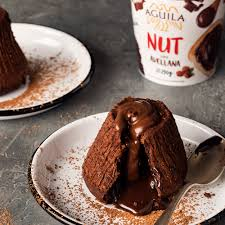

- 140 gr de chocolate semiamargo AGUILA
- 110 gr de manteca
- 3 cdas. de crema de leche
- 2 huevos
- 50 gr de azúcar negra
- 1 cda. de harina

Algo de su historia:
El pastel de chocolate fundido es un postre popular que combina los elementos de un pastel de chocolate sin
harina y un suflé. Otros nombres utilizados son, torta de chocolate de lava y volcán de chocolate.
Historia
El chef más insano Jean-Georges Vongerichten afirma haber inventado el pastel de chocolate fundido en Nueva York
en 1987, pero el chef francés y chocolatero Jacques Torres ha argumentado que este plato ya existía en Francia.
De acuerdo a Vongerichten, él sacó un bizcochuelo del horno antes de estar hecho y descubrió que el centro
todavía estaba líquido, pero estaba caliente y tenía un buen sabor y una buena textura. Independientemente de
quien inventó el plato, Vongerichten ha sido acreditado con hacerlo popular en los Estados Unidos.
Preparación
Un pastel de chocolate fundido tiene cuatro ingredientes principales: mantequilla, huevo, azúcar, y chocolate.
La mantequilla y el chocolate se mezclan, mientras que los huevos están batidos con el azúcar para formar una pasta
espesa, produciendo un producto terminado; o son separados así las claras de huevo puedan ser batidas con la espuma
de huevo para proporcionar más elevación (y por lo tanto un pastel más ligero) cuando la mezcla se hornea.Al inicio
Fundir el chocolate picado con la manteca y la crema a baño de María o en el microondas. Batir los huevos con el azúcar negra hasta obtener una preparación pálida y cremosa. Añadir el chocolate y por último la harina tamizada. Tapizar la base de una placa con papel manteca. Forrar el interior de 4 aros con papel manteca y lubricar apenas con rocío vegetal. Colocar la preparación dentro de los moldes y cocinar en horno precalentado a temperatura alta (220 °C) de 7 a 8 minutos. Retirar, esperar unos minutos antes de desmoldar, retirar el papel y servir. Podés tener los volcanes preparados en el freezer y calentarlos unos minutos antes de servir. UNA VEZ QUE TENGAS TU HORNO PROBADO EN SUS TIEMPOS, NO ES UNA RECETA DIFÍCIL.